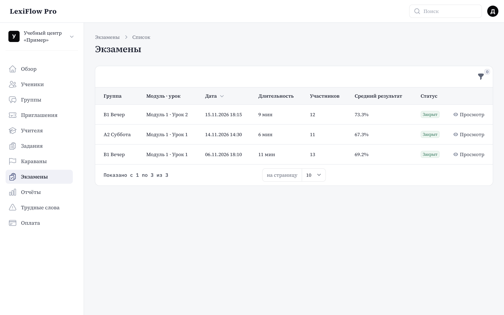
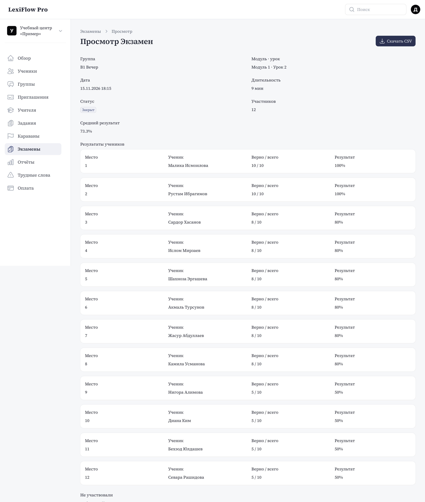

Экзамен на время учитель запускает в Telegram-группе командой /start_exam (подробно — в руководстве учителя по командам бота). В кабинете экзамены только смотрят: создать или изменить экзамен здесь нельзя.
Кто имеет доступ: владелец — экзамены всех групп центра; учитель — своих групп.

Рис. 59.1. Экзамены центра: группа, модуль · урок, дата, длительность, участников, средний результат (доля верных ответов), статус «Открыт» или «Закрыт».
Фильтры: «Группа» и «Период» (даты «С» и «По»). Сортировка — по дате. Пустой список: «Экзаменов пока нет».
Результаты экзамена
Нажмите «Просмотр» в строке экзамена.
Смотрите три блока: «Результаты учеников» (место, ученик, верно / всего, процент), «Не участвовали» (кто из группы не пришёл) и «Разбор по словам» — слова с долей верных ответов класса, самые трудные сверху. Их стоит повторить на уроке.
Кнопка «Скачать CSV» выгружает результаты в файл для Excel.

Рис. 59.2. Экзамен группы «B1 Вечер», модуль 1 · урок 2: 12 участников, средний результат 73,3 %, двое не участвовали. Ниже на странице — разбор по словам.
Что видит ученик: итоги экзамена бот публикует в группе после закрытия — десять лучших с очками.